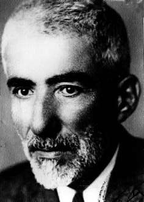

Ali Himmet Berki [1883-1976]

1883'de elbistan'da doðdu. Eski Temyiz reislerindendir. Kendi sahasýyla alâkalý kýymetli eserlerin sahibidir. 1976'de Ankara'da vefat etti.Ali Himmet Hoca "Elbistan'da evliyadan bir Himmet Baba vardýr. Annem, 'eðer oðlum olursa ismini Himmet korum', diye niyet edip, Cenab-ý Hakka yalvarmýþ. Allah duasýný ve niyetini kabul edince benim adýmý Ali Himmet koymuþlar" diye ismi ve memleketiyle ilgili hatýrasýný anlatýrdý.
Hukuk ve tarih sahasýnda çok kýymetli eserler veren Ali Himmet Bey, uzun yýllar Temyiz Reisliði yaptýktan sonra 1950 yýlýnda Temyiz Reisliðinden emekli oldu.
Medresetü'l-Kuzat'tan sýnýf birincisi olarak mezun olduðunu ifade eden Ali Himmet Berkî'ye, Bediüzzaman Said Nursî ile ilgili hatýralarýný sorunca, Onu ilk defa Ýkinci Meþrutiyetten önce Ýstanbul'da Fatih'te gördüðünü söyledi ve hatýralarýný anlatmaya baþladý:

HATIRALAR
Ýlim muhitlerinde herkes ondan bahsederdi
Ben o yýllarda Medresetü'l-Kuzat'ta talebe idim. Talebe arkadaþlar arasýnda ileri bir derecemiz vardý. Bütün Ýstanbul'a Bediüzzaman'ýn ismi ve þöhreti yayýlmýþtý. Bütün ilim muhitlerinde herkes ondan bahsediyordu.
Fatih'te bir handa misafireten kalýyormuþ, herkesin her çeþit sualine cevap veriyormuþ, diye hakkýnda çok rivayetler duyuyorduk. Talebe arkadaþlarla gidelim diye karar verdik. Bir grup arkadaþla bu meþhur zatý ziyarete gittik.
O gün Fatih'te bir çayhanede olduðunu, sorulan suallere cevap verdiðini iþittik. Hemen oraya gittik. Çok kalabalýk bir meclisi ve sýrtýnda garip bir elbisesi vardý. Bir hoca kisvesi yoktu. Þarkýn mahallî kýyafetiyle oturuyordu.
Biz yanýna vardýðýmýzda Bediüzzaman kendisine sorulan suallere cevap veriyordu. Etrafýndaki ilim sahipleri, derin bir sessizlik ve hayranlýk içinde dinliyorlardý kendisini. Herkes verdiði cevaptan memnun ve tatmin oluyordu.
Felsefecilerden, sofistlerin iddia ve fikirlerine cevap veriyordu. Aklî, mantikî delillerle onlarýn görüþlerini çürütmüþtü. Benim ilk defa görmem ve görüþmem o zaman olmuþtur. (Necmeddin Þahiner - Son Þahitler)
Lügatte ve kelâmda üzerine kimse yoktu
Benim Bediüzzaman hakkýnda görüþlerim ise þudur:
Her lügati bilirdi. Arapça lügatten herhangi bir kelime sorsanýz, hemen cevabýný ve mânasýný verirdi. Sonra kelâmda üzerine kimse yoktu. Bu iki ilimde, bilgisine son yoktu.
Arap edebiyatý, Fars edebiyatý, Doðu ve Batý edebiyatýna vakýftý. Yine hakkýnda yaygýn fikir, bir din adamý olarak kimseden hediye, para vesaire almýyordu. Ýsteseydi çok þeylere sahip olabilirdi. Dünyada dikili bir aðacý yoktu. (Necmeddin Þahiner - Son Þahitler)
Ýlmine itiraz edemeyenler onu iftira ile çürütmek istiyorlar
Ýslâmcý bir zattý. Ona atýlmak istenen taþlar hep iftira taþýdýr. Þöyle-böyle derler, kat'iyyen doðru deðildir. Eserleri meydandadýr, onun ilmine, irfanýna baþka bir delil aramaya ihtiyaç yoktur. Çünkü eserleri Nur Külliyatý meydanda ve ellerdedir. Kat'iyyen Kürtçü falan deðil, hep yalan ve iftira atýyorlar. Yýllardýr adlî ve resmî mercilerden geçen Nur Risaleleri çok incelendi. Her þeyi ile meydana kondu. Ýlmine itiraz edemiyorlar, ancak iftira ile çürütmek istiyorlar. (Necmeddin Þahiner - Son Þahitler)
Allah vergisi mazhariyet
28.09. 2009 tarihinde görüþtüðümüz Avukat Gültekin Sarýgül beyefendi, Ali Himmet Berki’yi bir ziyaretlerini þöyle anlattý;
Antalya Ýbralý’da Temyiz mahkemesi reisi idi. Mecelle mevzuunda tamamen üstad kabul edilen bir zattý. Ýslam hukuku sahasýnda da son derece derin bir âlimdi.
1965 yýlýnda, Ergenokon’un o zamanki uzantýlarý hâkimlere baský yapmak suretiyle Ceza Genel Kurulundan, Risale-i Nur aleyhinde, onu mahkûm etmeye matuf bir karar çýkardýlar. Bu karar tabii hukuki deðil, siyasi bir karar.
O sýrada Ahmed Feyzi Kul aðabey ile beraber Ankara’da bulunuyorduk. Ne yapacaðýz filan diye konuþurken, Ahmed Feyzi aðabey; “Ali Himmet Berki’yi ziyaret edelim, durumu ona anlatalým” dedi.
Peki dedik. Sorduk soruþturduk, Ankara Maltepe’de iki katlý bir binanýn zemin katýnda oturduðunu tespit etik. Kapýyý çaldýk. Ýçeri buyur ettiler. Hazret de hasta yatýyormuþ. Girdik, elini öptük. Durumu izah ettik. Avukat olduðumu söyledim.
Bana; “Oðlum, tevhid-i içtihada gidin” dedi. Tabii o zaman, tamamen siyasete bulaþmýþ, siyasi kanaatlerinin zebunu olmuþ hâkimlerden müteþekkil, sonraki ismi Yargýtay olan bir mevkiden tutup da hukuk adýna tevhid-i içtihada gitmek büyük bir cinayet olurdu. Ama tabii ben onu Ali Himmet Berki merhuma izah etmedim. “Düþünürüz muhterem hocam” dedim.
Sonra, biz daha sormadan Üstad hakkýnda çok istihsankerane þeylerde bulundu;
“Allah Rahmet eylesin, Allah Rahmet eylesin, büyük âlimdi. Salâbet-i imaniyesi çok çok kuvvetliydi. Onun eþi menendi bu devirde bulunmaz. O seviyede, bu davaya hýrz-ý can etmiþ, kellesini ortaya koymuþ, öyle birisini bulamazsýnýz.
Âlim adamdý, çok büyük âlimdi. Siz Risale-i Nur’u onun ilmi karihasýnýn tam manasýyla bir tezahürü gibi kabul etmeyin. Risale-i Nurlarý sadece halkýn irþadý için yazmýþtýr.. Eðer o, mücerred ilim adýna eser yazmýþ olsaydý sizi býrakýn da ben anlayamazdým.
Risale-i Nur’da hazretin yazdýðý öyle þeyler var ki, ben anlamakta zorlanýyorum, siz nereden anlayacaksýnýz? Allah’ýn vergisine mazhar olmuþ, bir mevhibe-i ilahiye olarak ilmin kendisine ihsan edildiði bir zat. Bunu böyle bilin” dedi. (Salih Okur, Cevaplar.org)